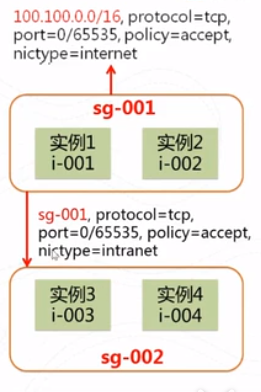
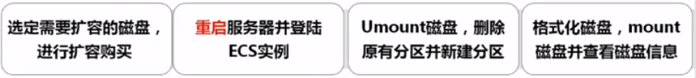
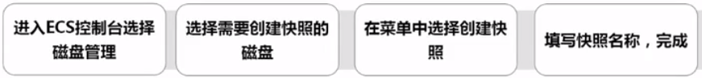
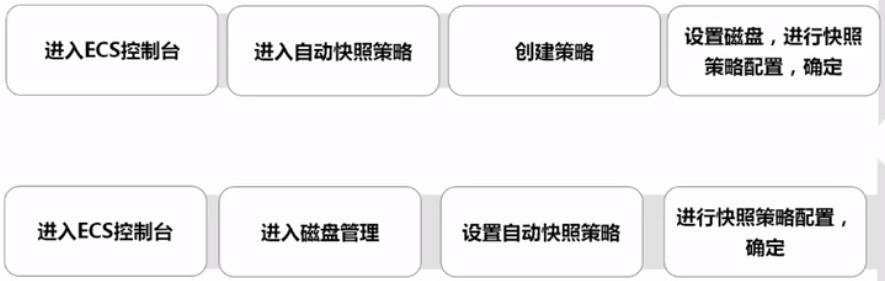
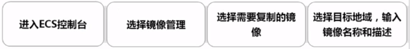
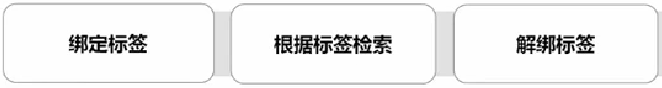

ecs
安全组可跨zone，但不可跨region
故障迁移只能在同一zone内进行
快照&镜像在region可见，跨zone
ecs独立云磁盘
ecs独立云磁盘不能跨zone挂载；同一时间内，只能挂载在1个实例上，可设置是否随实例一起释放；只支持按量付费。
ecs快照功能
ecs快照是磁盘数据在某一个时间点的拷贝，ecs快照存放在oss上
快照用途：
- 最常见的用途是备份数据，当应用程序或人为误删除一些数据时，可以通过快照找回
- 通过系统盘快照可以创建出自定义的镜像，批量复制出与目前系统完全一样的云服务器实例
- 通过数据盘快照，可以复制出与目前磁盘数据一样的新磁盘
自动快照：
- 用户可以通过控制台和API设置自动快照的策略，默认会采取3+1的策略，即自动为用户保留过去3天+上个周日的快照
- 用户也可以设置创建自动快照的时间段，与自己的应用高峰错开。（创建快照时磁盘的IO性能会降低）
快照业务策略
- ECS的快照，目前还未向用户收取费用，采用免费试用的策略
- 每位用户最多可以创建的快照数量为6*磁盘数+6
- 未来，快照将根据所占用的空间大小收费
ECS快照机制
ECS的快照是增量快照，只有两个快照之间的变化数据块，才会被拷贝备份出来。
ECS镜像
ECS镜像是ECS实例可选择的运行环境模板，包括操作系统和预置的软件和配置
目前，镜像的本质是一个系统盘的快照。在未来，镜像会把数据盘也涵盖在内，支持创建整机镜像。
ECS自定义镜像的使用范围
创建自定义镜像
通过为系统盘创建一个快照后，即可从这个快照生成一个可被整region傅的自定义镜像。
自定义镜像使用注意事项
- 数据盘mount：
在linux下，可能已经在/etc/fstab文件中设置了数据盘自动mount，制作自定义镜像时，要去掉这个设置，否则将导致无法启动新实例
- 密码：
新的镜像的root密码是新分配的，而用户之前创建的用户信息，将在新实例中得以保留；在/etc/resolv.conf中用户增加的记录也将继续被保留
- 自动启动服务：
为了自动扩展能力而创建的镜像，应当设置好启动时要自动启动的程序，如nginx/php-fpm等
ECS安全组
安全组可以对ECS实例进行分组，并定义了一个或多个防火墙规则，规则包含容许访问的网络协议、端口、源ip等。这些规则对于加入了该安全组的所有实例均生效。每个实例至少加入一个安全组。
安全组用途
- 当需要对ECS进行分组，限制互相访问权限控制时需要使用安全组功能
- 通过安全组的控制权限，可以实现：
- 允许或者限制特定的安全组或者特定的来源是否可以访问自己
- 允许或者限制本安全组内的实例是否可以访问特定的资源
防火墙规则
- 典型的规则由source(ip range或安全组),protocol,port,policy(accept/deny),network type(内网或公网)组成
安全组授权方式
每个安全组可以用两种方式授权其他人访问自己
- 指定源ip地址段(CIDR Block)，如100.100.0.0/16，支持指定公网IP段
- 指定源安全组的ID，如容许sg-001安全组中的实例访问本安全组中的实例，这种方式只能用于内网之间的授权

ECS安全组功能与系统默认安全组
不同用户网络隔离
每个用户拥有自己的安全组，不同用户名下的安全组之间是完全隔离的。因此，不同用户名下的实例，内网是完全隔离的。
系统默认的安全组
系统默认为每个用户创建了1个默认的安全组，这个安全组容许公网连接，因此当用户启动webserver，监听80端口时，无需修改安全组规则即可使用。
ECS安全组限制
安全组方向限制
安全组不仅能对入方向做防火墙规则，即将自己作为destination，也支持出方向的安全组规则，即将自己作为source。
安全组限制
每个用户最多100个安全组，每个安全组最多1000个实例，每个实例最多加入5个安全组，每个安全组最多100条规则。
创建安全组
配置安全组策略
ECS产品要点
服务器IO性能
- 选择支持I/O优化的实例，挂载SSD云盘时能够获得SSD云盘的全部存储性能，因为I/O优化为实例与云盘之间提供更好的网络能力，可保证SSD云盘存储性能的发挥。
- 对于不支持I/O优化的实例，挂载SSD云盘时，通常最高获得1000左右的IOPS性能。
- 目前实例系列II和实例III系列全部为I/O优化实例，实例系列I中只支持2核4G以上配置的服务器，高性能需要有足够的预算，预算充足的情况下可以选择。
挂载数据盘
挂载数据盘有两种入口
- 从实例操作入口
选择需要挂载磁盘的ECS实例-->菜单选择“本实例磁盘”-->挂载磁盘-->查看挂载结果
- 从全部磁盘操作入口
选择“磁盘”列表-->选择要挂载的云盘-->选择实例进行磁盘挂载-->查看挂载结果
挂载磁盘需要注意：
- 一台ECS最多挂载4块数据盘
- 系统盘不支持单独挂载操作
- 挂载磁盘的ECS必须是Running或者Stopped状态
- 被挂载云盘必须为Available（待挂载）状态
扩容磁盘
注意事项
- 只有数据盘支持扩容
- 通过管理控制台和Open API扩容磁盘之后，需要在ECS控制台或者使用Open API重启实例之后才可以生效
- 扩容生效之后的磁盘，仍然需要用户手动去格式化扩展的存储空间
Linux系统磁盘扩容

e2fsck -f 扩容磁盘名 #文件系统检查
resize2fs 扩容磁盘名 #变更文件系统大小
Windows系统磁盘扩容
创建快照

注意事项
- 避开业务高峰。创建快照可能会轻微降低磁盘的性能，出现短暂瞬间变慢。
- 实例状态必须为“运行中”或“已停止”。
- 手动创建的快照会一直保留。如不再需要，请手动删除。
删除快照
注意事项
- 快照删除后，不能用任何方法恢复。请谨慎操作。
- 如果快照用于制作自定义镜像，需要先删除关联的镜像，然后才能删除。
自动快照策略

创建自定义镜像
复制自定义镜像
适用场景
实现跨地域使用自定义镜像

自定义镜像共享
适用场景
需要向其他账户分享ECS实例时
通过Tag进行实例管理

注意事项
- 每个标签都由一对键值对组成
- 每个实例只允许最多打10个标签
- 一个实例上的每个标签键必须不同，相同标签键的标签会被覆盖
- 每个region下的标签信息不互通，例如在华东1地域创建的标签在华东2地域不可见
- 解绑标签时，如果解绑之后该标签已经没有绑定的资源，则该标签自动被删除
ECS API调用方式
- 对ECS API接口调用是通过向ECS API的服务端地址发送HTTP GET请求，并按照接口说明在请求中加入相应请求参数来完成的；根据请求的处理情况，系统会返回处理结果。
- 请求结构
- 服务地址：ECS API的服务接入地址为：ecs.aliyuncs.com
- 通信协议：支持通过HTTP或HTTPS通道进行请求通信。推荐使用HTTPS通道发送请求。
- 请求方法：支持HTTP GET方法发送请求，这种方式下请求参数需要包含在请求的URL中。
- 请求参数：每个请求都需要指定要执行的操作，即Action参数（例如StanInstance）以及每个操作都需要包含的公共请求参数和指定操作所特有的请求参数。
- 字符编码：请求及返回结果都使用UTF-8字符集进行编码。
ECS API签名机制
- ECS服务会对每个访问的请求进行身份验证，所以无论使用HTTP还是HTTPS协议提交请求，都需要在请求中包含签名（signature）信息。
- ECS通过使用Access Kye ID和Access Key Secret进行对称加密的方法来验证请求的发送者身份。
ECS API详细介绍
阿里云cli
命令结构及示例
阿里云命令行工具的命令结构：
aliyuncli <command> <subcommand> [options and parameters]
<command>：顶级命令，表示阿里云支持的基础服务，如ECS，也可以是：help、configure
<subcommand>： 次级命令，阿里云基础服务对应的附加子命令，如：DescribeInstanceStatus
[options and parameters]：选项或参数，支持多种类型的输入值，如数字、字符串、列表、映射和json结构
举例：
aliyuncli ecs DescribeInstanceStatus
aliyuncli ecs DescribeRegions
虚拟专有网络vpc
虚拟专有网络帮助用户基于云计算网络建立一个完全隔离的私有网络环境。
- 通过虚拟路由器，虚拟交换机，自定义路由，安全组等功能组件，可以按需配置私有网络的逻辑拓扑和网络配置
- 为了实现应用平滑迁移，用户可以使用专线或VPN将虚拟专有网络与原有物理网络之间连接起来，组成一个混合网络域
vpc的安全隔离
- 不同用户的云服务器在不同的vpc里
- 不同vpc之间通过隧道ID进行隔离。vpc内部由于虚拟交换机和虚拟路由器的存在，所以可以像传统网络环境一样划分子网，每一个子网内部的不同云服务器使用同一个虚拟交换机互联，不同子网间使用虚拟路由器互联。
- 不同vpc之间内部网络完全隔离，只能通过对外映射的IP（弹性IP和NAT IP）互联
- 由于使用隧道封装技术对云服务器的IP报文进行封装，所以云服务器的数据链路层（二层，mac地址）信息不会进入物理网络，实现了不同云服务器间二层网络隔离，因此也实现了不同vpc间二层网络隔离
vpc术语
| 术语 | 全称 | 说明 |
|---|
| 专有网络 | AliCloud VPC | 专有网络是用户基于阿里云创建的自定义私有网络，不同的专有网络之间彻底隔离，用户可以在自己创建的专有网络内创建和管理云产品实例，比如ECS，Intranet SLB，RDS等。 |
| 路由器 | VRouter | 路由器，是vpc网络的枢纽，它可以连接vpc内的各个交换机，同时也是连接vpc与其他网络设备的网关。它会根据具体的路由条目的设置来转发网络流量。 |
| 交换机 | VSwitch | 交换机，是组成vpc网络的基础网络设备。它可以连接不同的云产品实例。在vpc网络内创建云产品实例的时候，必须指定云产品实例所在的交换机。 |
| 路由表 | Route Table | 路由表，是指路由器上管理路由条目的列表。 |
| 路由条目 | Route Entry | 路由表中每一项成为一条路由条目，路由条目定义了通向指定目标网段的网络流量的下一跳地址，路由条目包括系统路由和自定义路由两种类型。 |
| 弹性公网IP | Elastic IP Address | EIP是可以独立购买和持有的公网IP地址资源，能动态绑定到不同的ECS实例上，绑定和解绑时无需停机。 |
| 专线接入 | | 可以帮助建用户建立一个连接本地数据中心至阿里云的专线网络 |
专有网络的操作
通过控制台可以对专有网络进行查看、创建、修改、删除。
- 在创建专有网络时，用户需要以CIDRBlock的形式指定专有网络内使用的私有网网段
- 专有网络创建之后，您需要继续创建交换机(VSwitch)，然后才能够在专有网络内创建云产品实例(ECS, SLB, RDS)
- 创建专有网络时，需要指定CIDRBlock。当新建VPC实例的状态变成Available之后，表示VPC实例创建成功，可以进行下一步的管理操作
- 删除指定的专有网络，必须首先删除专有网络内所有的云产品实例（包含安全组，交换机，云产品实例，路由条目等）
路由器使用
通过控制台可以对路由器进行查看与编辑：
- 创建VPC时，系统会自动为每个VPC创建1个路由器
- 删除VPC时，也会自动删除对应的路由器
- 可以编辑路由器名称、说明，但不支持直接创建和删除路由器
路由表使用
通过控制台不能对路由表本身进行操作：
- 新建VPC时，系统自动创建1个路由表
- 删除VPC时，系统会自动删除对应的路由表
- 不支持直接创建和删除路由表
路由条目使用
通过控制台可以对路由条目进行查看、添加、删除：
- 专有网络创建时，会自动创建1条系统路由，用于专有网络内的云产品实例访问专有网络外的云服务
- 创建交换机，系统也会创建1条对应的系统路由
- 用户可以创建和删除自定义路由条目
交换机的操作
通过控制台可以对交换机进行查看、创建、编辑、删除。
- 只有当VPC的状态为Available时，才能创建新的交换机
- 交换机不支持并行创建，一个交换机创建成功之后，才能够创建下一个
- 交换机创建完成之后，无法修改CIDRBlock
- 删除交换机之前，必须先删除目标交换机所连接的云产品实例
SLB
- 负载均衡（server load balancer，简称SLB）是对多台云服务进行流量分发的负载均衡服务
- SLB可以通过流量分发扩展应用系统对外的服务能力，通过消除单点故障提升应用系统的可用性
- SLB服务通过设置虚拟服务地址（IP），将位于同一地域（Region）的多台服务器（ECS）资源虚拟成一个高性能、高可用的应用服务池
- 根据应用指定的方式，将来自客户端的网络请求分发到云服务器池中
- SLB服务会检查云服务器池中ECS的健康状态，自动隔离异常状态的ECS，从而解决了单台ECS的单点问题，同时提高了应用的整体服务能力
- 在标准的负载均衡功能之外，SLB服务还具备TCP与HTTP抗DDos攻击的特性，增强了应用服务器的防护能力
- SLB服务是ECS面向多机房方案的一个配套服务，需要同ECS结合使用
SLB核心概念
阿里云SLB主要由3个基本概念组成：
- LoadBalancer代表一个SLB实例
- Listener代表用户定制的负载均衡策略和转发规则
- BackendServer是后端一组云服务器
来自外部的访问请求，通过SLB实例并根据相关的策略和转发规则分发到后端云服务器进行处理
| 术语 | 全称 | 中文 | 说明 |
|---|
| SLB | Server Load Balancer | 负载均衡服务，简称SLB服务 | 阿里云计算提供的一种网络负载均衡服务，可以结合阿里云提供的ECS服务为用户提供基于ECS实例的TCP、UDP与HTTP负载均衡服务 |
| Region | Region | 地域 | 代表资源所在并有效的地域，每个地域包含一组数据中心 |
| Zone | Zone | 可用区 | 代表SLB所在的Zone |
| LoadBalancer | Load Balancer | 负载均衡服务实例，简称SLB实例 | SLB实例可以理解为SLB服务的一个运行实例，用户要使用SLB服务，就必须先创建一个SLB实例，LoadBalancerId是识别用户SLB实例的唯一标识 |
| Listener | Listener | 负载均衡服务监听 | 负载均衡服务监听，包括监听端口、负载均衡策略和健康检查配置等。 |
| BackendServer | BackendServer | 后端服务器 | 接受SLB分发请求的一组云服务器，SLB服务将外部的访问请求按照 |
| | | |